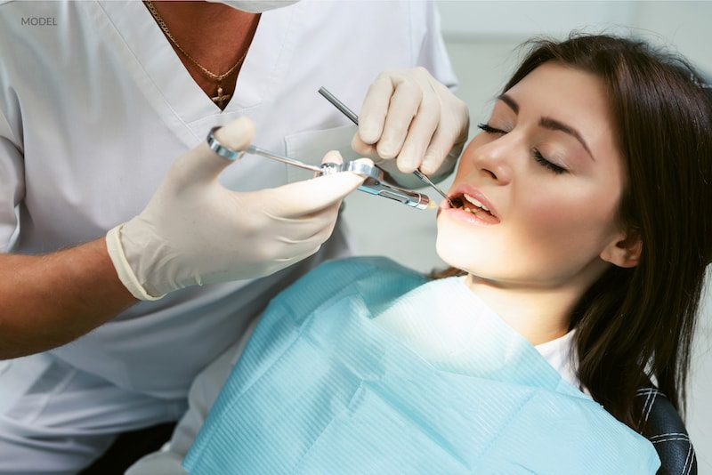

At our dental studios, we offer safe and effective sedation services designed to turn anxious, stressful visits into calm, comfortable experiences. Catering to patients with dental phobia, a strong gag reflex, or those undergoing long, complex procedures, our qualified team provides both inhalation sedation ("happy air") for quick recovery and intravenous (IV) sedation for deep relaxation. Conscious sedation allows you to remain awake and responsive while feeling completely at ease and often, with little to no memory of the procedure. Our priority is your comfort, ensuring you receive the necessary dental care in a safe, controlled, and relaxed environment.

Transform your dental fear into comfort with our safe, tailored sedation options.
At the dental studios, we understand that dental anxiety can often prevent patients from receiving necessary care, which is why we provide safe and comfortable sedation dentistry services.